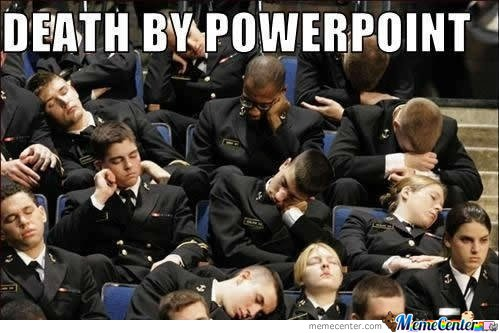

For your pitch presentation, you will
The general goal of the project is to learn how to make a short, persuasive oral presentation and to learn about the best strategies for all oral presentations. Ideally, you’ll discover how to avoid causing death by PowerPoint as well.
You are probably familiar with the idea of a pitch. The textbook Writer/Designer (2014) explains the genre this way:
A pitch is a short presentation that explains how the what and the how of your idea might come together in the final project. It’s a means of convincing audience members who have some stake in what you are proposing that you know what you’re talking about and can take on the project at hand. (Pitches are sometimes called elevator speeches, drawing on the idea of a writer who is on an elevator with a publisher and has only four floors to convince the publisher to accept his or her book proposal.) (p. 55)
If you watch the TV show Shark Tank, you have seen lots of pitches. The show is essentially nothing but pitches and the response to them. While you may not have given a workplace pitch, you have probably pitched an idea to a family member or friend, to a teacher or coach, or to another member of your community.
Your job in this short presentation is to explain your plans for your recommendation report.
Your document needs to account for the following components:
You can use whatever tool you like, but the finished project must be easily viewable, without a login or special software
Estimate that you will need three pages or less, but know that I don’t count pages. If you need more room, use it. If you need less, that’s fine too. Just be sure that you include all of the required details.
Explain as much as you know at this point about your major projects. If you are unsure about something, explain what you are considering (e.g., you are not sure if you will use iMovie or PowerPoint).
Your document should include this information:
Introduction/summary. Give an overview of what your project is about, how you will approach it, what genre you will use, and how that genre fits the rhetorical situation. Be sure to explain the rhetorical situation for your projects as a whole. Think about how all the pieces will work together on the website.
Project plan. Explain in detail how you plan on designing the project to support your argument; be sure to describe which technologies you will use, how you will gain access to or create media assets, and how you will integrate your research. Consider the following:
Justification. Discuss why your proposed design is appropriate and effective for making your argument. (Your genre conventions checklist on page 51 in Chapter 3 will be helpful here.) Consider how you design your project in relation to your topic. Explain how the design is appropriate to your project’s rhetorical situation.
Timeline. Give a detailed work plan of how and when you will complete all of the components, including a breakdown of your tasks at each stage of the project.
You do not need a section on Roles and responsibilities since you are working independently.
Your formal pitch is a critical document in your workflow since it tells me your plans for completing the major projects. A misstep here could cause trouble later in the term. Put some effort into thinking through your plans, and then explain them as well as you can.
Use document design to help organize your text. Clear headings make a big difference in structuring your pitch (and they can help ensure you remember to include all the required details).
Add relevant graphics (such as images or tables) to clarify or explain your ideas. You might add a calendar or a timeline to show your proposed schedule. If you already have an idea of what something will look like, add an image that shows it. Remember though that any graphics should serve a clear purpose. Don’t add graphics that are purely decorative.
Your formal pitch documents your starting point for the major projects. Your plans can (and likely will) change. Don’t let your perfectionist tendencies stifle your creativity or risktaking.